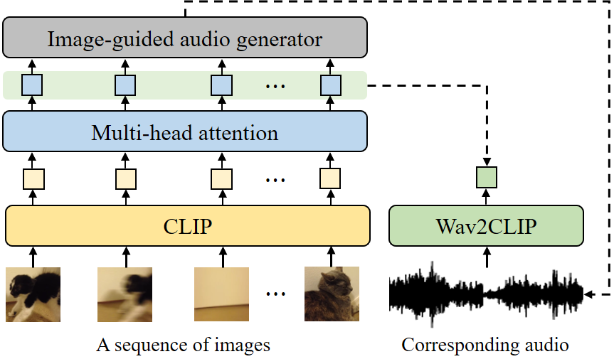

GRAVO
Learning to Generate Relevant Audio from Visual Features with Noisy Online Videos
Youngdo Ahn1, Chengyi Wang2, Yu Wu3, Jong Won Shin1, Shujie Liu3
1Gwangju Institute of Science and Technology, 2Nankai University, 3Microsoft
Abstract.
Given a video, previous video-to-audio generation methods use a hierarchical auto-regressive language model to produce a sequence of audio tokens to be decoded into a waveform. The audio generation depends only on the previous audio token and the current image but ignores the surrounding images that may have useful information. To learn the relationships between image frames, in this paper, we introduce GRAVO (Generate Relevant Audio from Visual features with Online videos), which employs multi-head attention (MHA) to encode rich context information and guide the audio decoder to produce more accurate audio tokens. Moreover, two auxiliary losses are introduced to explicitly supervise the MHA behavior, maximizing the similarity between the MHA output vector and the target waveform representation while preserving the original visual semantic information. Experimental results demonstrate that GRAVO surpasses state-of-the-art models on ImageHear and VGG-Sound datasets.
This page is for research demonstration purposes only.
Model Overview

The overview of GRAVO. CLIP embeddings are extracted from a given sequence of images and transformed through multi-head attention (MHA). The transformed embeddings are used to generate corresponding audio in the same video via the image-guided audio generator. In the training phase, Wav2CLIP embedding is extracted from the target audio and used to guide MHA to extract relevant image features.
Make-A-Video Samples
| Video name | Video | Baseline | GRAVO |
|---|---|---|---|
| A teddy bear painting a portrait. | |||
| Hyper-realistic spaceship landing on mars. | |||
| A confused grizzly bear in calculus class. | |||
| A golden retriever eating ice cream on a beautiful tropical beach at sunset, high resolution. | |||
| Sailboat sailing on a sunny day in a mountain lake, highly detailed. | |||
| A knight riding on a horse through the countryside. | |||
| A blue unicorn flying over a mystical land. | |||
| A panda playing on a swing set. | |||
| Robot dancing in times square. | |||
| Cat watching TV with a remote in hand. | |||
| A fluffy baby sloth with an orange knitted hat trying to figure out a laptop close up highly detailed studio lighting screen reflecting in its eye. | |||
| A dog wearing a Superhero outfit with red cape flying through the sky. | |||
| A small domesticated carnivorous mammal with soft fur, a short snout, and retractable claws. | |||
| Humans building a highway on mars, highly detailed. | |||
| A musk ox grazing on beautiful wildflowers. | |||
| A ballerina performs a beautiful and difficult dance on the roof of a very tall skyscraper; the city is lit up and glowing behind her. | |||
| i2vsingle1. | |||
| i2vsingle2. | |||
| i2vsingle3. |